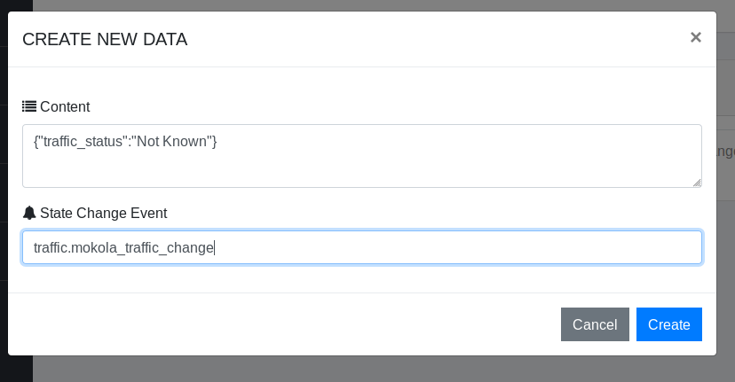
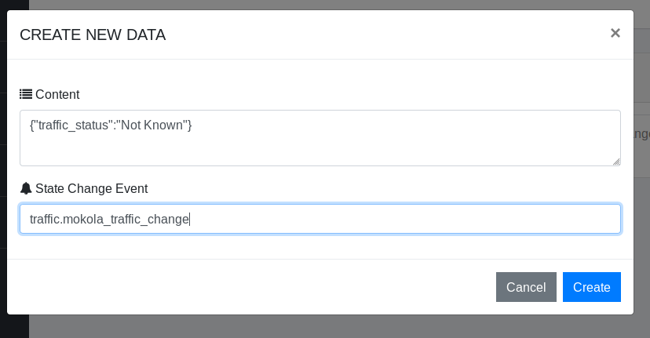
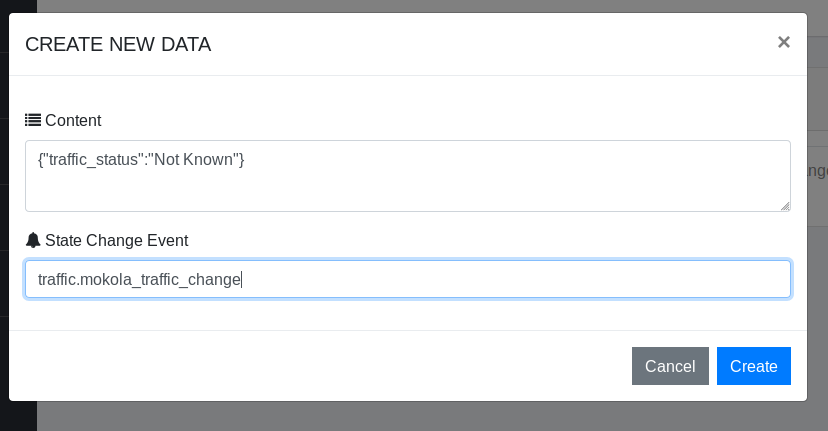

BackLess documentation by FIBDev
A) Installation
Running the app locally
Before you can install this app locally, ensure you have the bellow installed on your machine:
1. A php server or software package e.g WAMP, XAMP, LAMP APACHE cli e.t.c
2. A database server or software package e.g WAMP, XAMP, WAMP ( for MySql), or the software that can serve the database you are using
2. A database server or software package e.g WAMP, XAMP, WAMP ( for MySql), or the software that can serve the database you are using
To configure the app, open the
Since you will be running the app locally, all you need is the database setup. Backless uses the configuration to connect to the database.
Create a database with the software you have e.g XAMPP, SequelPro. You need your access details to the database as well as the database information.
.env file at the root of the directory. The .env file
contains
all the environment variables required to set up the app. The .env.example has been included
in case
you want to revert to the default configuration.Since you will be running the app locally, all you need is the database setup. Backless uses the configuration to connect to the database.
Create a database with the software you have e.g XAMPP, SequelPro. You need your access details to the database as well as the database information.
Note: you can delete any variable that was set in the
.env file that comes with the
installation.
Just clear the .env file and use the content of the .env.example file.
Set the url of your app
set the database details
We shall discuss the other fields when we reach their respective sections later in this documentation.
APP_URL=http://localhostset the database details
APP_NAME=BackLess DB_CONNECTION: mysql (If you are using mysql)DB_HOST: http://localhostDB_PORT: 3306 (The port the database is running)DB_DATABASE: mydatabase DB_USERNAME: rerunnerDB_PASSWORD: secretBROADCAST_DRIVER:pusher (Pusher provides the realtime funtionality for backless)
We shall discuss the other fields when we reach their respective sections later in this documentation.
After the configuration, what is next is to serve your app. There are many ways users can serve their
php apps. If you are using a package like XAMPP, you have to get the extracted folder into
the htdocs
folder of xampp. Now start your php server from the XAMPP panel.
Every Laravel app is served from the
If you know how to use the terminal, every Laravel application comes with a light-weight server with which you can serve your app. You do not need any re-routing.
Open your terminal and navigate to the root directory of Backless then enter:
Headers:
Response:
You can delete an object either by its ID, or by using search patterns as discussed earlier.
You can check whether or not a user is authorized by verifying their auths details. To achieve this, you need to accept the auth details of the user (similar to logging in). This details are looked up and a success message is returned if the user is authorized, otherwise an error is returned which denotes that such detail does not exist.
Lets see an example - I want to see if a user with
The
As we have seen a few sections ago that Backless provides a virtual file system to manage assets and these assets (files) can either be stored remotely on DropBox and Amazon S3 or locally on the server. Whichever is the case, assets are accessed the same way. In fact, when an asset is been retrieved from the cloud, it is made to look as though you are actually getting it from your server. The file is served virtually from your server with your server's url.
Remember that whether you are uploading or downloading a file, the
See the following example
In the example above, the request parameters are stored in an object of
This request return an object that contains the
Download a file from storage
Every Laravel app is served from the
public folder of the project. So in this case, from the
public
folder from the root directory of BackLess extraction folder. Which means that if you are using the Apache
package every url has to point to public folder of the apps root directory. So to access the
app from
the browser visit http://localhost/BackLess/public/.
PHP must be installed to be able to access it from the console.
If you know how to use the terminal, every Laravel application comes with a light-weight server with which you can serve your app. You do not need any re-routing.
Open your terminal and navigate to the root directory of Backless then enter:
$ php artisan serveSetting up the database
The easiest way to install the Backless is by using the installer that is bundled with Backless. It's easy
and straight foward.
Navigate to
Ensure that all requirements are satisfied:
Ensure that all permissions are enabled:
Use the classic text editor to edit your
Now click Save and Install to finisth the installation process.
Navigate to
{APP_ROOT}/install to start the installation process.Ensure that all requirements are satisfied:
Ensure that all permissions are enabled:
Use the classic text editor to edit your
.env file:Now click Save and Install to finisth the installation process.
If you have gone through the installation process and you want to go over it again, you have to delete
the
install file located in the storage folder of the Backless
home directory. Then revisit the /install route of your installation.
Deploying the app to the production server
Although BackLess ships with a GUI installer that only requires you to click and click until everything is
set up.
However, you are required to have some manual setup before you can run a successful installation.
Acquire a domain name. Be sure to point it the
public folder of the apps location. For
instance, assuming you have extracted the app to a server with ip 10.34.45.2, then the url
(www.myurl.com) that you purchased should be pointed to 10.34.45.2/public/ and NOT to
10.34.45.2 as this will expose all the files at the root of your domain which is a
dangerous
move.
To setup your database, use the MySql database wizard that comes with cpanel (if you are
setting
it up with cpanel). Create a [DataBase and a User] using PHPMyAdmin database setup that comes with
cpanel. Assign the user to the database you created but be sure to allow all previledges. Note down
the
username and the password as you will need them for your installation. Also make sure you know the
url
and the port of the database. You can get these information by checking the database info with
PHPMyAdmin.
Now visit you domain at
Now visit you domain at
www.myurl.com/install to run the installation wizard. Then follow the steps
explained in the previous section.
The interface
Logging In
After a successful installation, the next step is to log in. Accounts can be created as users
from the signup page.
To login as a user, navigate to
After a fresh installation, BackLess creates a default admin account. Log in to this account using the following credentials:
/signup and create a new user account then proceed to the
next sections in this
documentation.After a fresh installation, BackLess creates a default admin account. Log in to this account using the following credentials:
email: admin@backless.test
Password: password@001
From there, you can do account adminstration, create plans, suspend accounts and so on. It's really straight foward so play around
with the
environment. Be sure to change the default details to your preferred details for security
reasons.
Create a project
When you login to as a user, you see a pretty much empty panel. Go ahead and create a new app -
My First BackLess App
Now click on your project card to explore it.
Data store
You can easily create data without the need for schema declaration.
To access the data store from the web interface, click on the "All Data" option menu from the Infrastructure->Data Storeoption menu Click on the "New" button and enter what you wish to store in JSON format.
An example is provided for you:
To access the data store from the web interface, click on the "All Data" option menu from the Infrastructure->Data Storeoption menu Click on the "New" button and enter what you wish to store in JSON format.
It is important that your data be in JSON format before it
can be stored.
A correct data format is:
Next, fill in the optional State Event Change field. BackLess declares all data objects as
non-broadcasting except if
explicitly declared by the user. The field contains the channel on which to broadcast any
changes to the
object and the specific
event to trigger. We will cover events and broadcasting shortly, you can leave that field for
now.{"name":"Ethan", "surname":"Tju"}
An example is provided for you:
Data Index
Indexes are ways by which you can easily access any resource (storage assets or data objects)
while
abstracting the details. We will get back to that shortly because we need the knowledge of
somethings
we have not yet mentioned.
Storage
Storage provides you with a simple abstract file system from which you can
access your
cloud storage assets even if they are distributed on different hosts.
The purpose of this is to provide you with a way to upload and download files from and to your apps without worrying about manually writing the upload and download code. So your apps can now use lots of assets (image, files etc.) which are store on the cloud.
To make use of this feature, we need to go back to our
BackLess provides three (3) ways to cloud storage: Dropbox API, AWS S3 buckets and local storage. To make use of any of these, you need to create an account on either Dropbox or either S3 because you'll need an access token to proceed. Local Storage is just your production server, assets are stored in a folder with the name format [APP_NAME]_users located in the
To use Dropbox, you need to create dropbox app. Create an account on Dropbox. Now visit the developer console. Then click Create app button.
Choose the Dropbox API option - then choose either you want a full access or a specific folder. Give your app a name and click Create app .
Note your

Now use them in your
Now that we have setup our preferred upload method, the next step is to make use of the virtual directory structure provided. Click on the Storage menu item on the side bar. This takes you to the root folder of your filesystem.
You have the option to create files and folders. When you upload a file, the file is stored in the current directory and when you delete a folder, every child (files and subfolders) are deleted as well this is similar to how you would have it on your computer operating system except that no real folders or subfolders are created at the destination, it's just for you to be able to group files.
The purpose of this is to provide you with a way to upload and download files from and to your apps without worrying about manually writing the upload and download code. So your apps can now use lots of assets (image, files etc.) which are store on the cloud.
To make use of this feature, we need to go back to our
.env file to make some
changes.BackLess provides three (3) ways to cloud storage: Dropbox API, AWS S3 buckets and local storage. To make use of any of these, you need to create an account on either Dropbox or either S3 because you'll need an access token to proceed. Local Storage is just your production server, assets are stored in a folder with the name format [APP_NAME]_users located in the
storage/app directory where [APP_NAME] is
the value for the APP_NAME envrionment variable you declared in your .env file
earlier.To use Dropbox, you need to create dropbox app. Create an account on Dropbox. Now visit the developer console. Then click Create app button.
Choose the Dropbox API option - then choose either you want a full access or a specific folder. Give your app a name and click Create app .
Note your
App key and click show to show
the App secret, then note it.
Now generate your access token, then note it.
Now use them in your
.env file
Using Dropbox
DROPBOX_APP_SECRET: (Enter your secret string here)
DROPBOX_TOKEN: (Your token goes here)
DROPBOX_ACCESS_TOKEN: (Then your token)
DB_PASSWORD: secret
Now that we have setup our preferred upload method, the next step is to make use of the virtual directory structure provided. Click on the Storage menu item on the side bar. This takes you to the root folder of your filesystem.
You have the option to create files and folders. When you upload a file, the file is stored in the current directory and when you delete a folder, every child (files and subfolders) are deleted as well this is similar to how you would have it on your computer operating system except that no real folders or subfolders are created at the destination, it's just for you to be able to group files.
Authorization (Auth)
The Auth functions of BackLess enalbes you to grant access rights to the assets and data store
objects if you are for instance building a
multi-user application. This function can only be accessed through the API and we shall see how
we can make use of it shortly.
Channels
A channel is simply a medium of communication. It is often used in the context
of realtime applications as a medium
of sending data in realtime between two entities through a network. When a channel is created,
several clients can
listen on that channel. Data is been passed accross a channel through a unique label called an
event. Whenever a client
wants to send a message, the message is labelled as part of an event so that only those that are
listening for that even on
that channel can recieve the message. Realtime events for BackLess is provided by Pusher
Realtime Services, a leading provider of realtime
services for developers. But it has
been abstraced so that you can easily fire/trigger events from any point in your app.
Realtime channels are used in two ways in BackLess; to notify of any change in a registered data object and to send data in realtime within your project. We shall see how to use this beautiful feature. You are going to enjoy it.
Realtime channels are used in two ways in BackLess; to notify of any change in a registered data object and to send data in realtime within your project. We shall see how to use this beautiful feature. You are going to enjoy it.
B. The BackLess API
The REST API endpoints are mediums through which your remote projects can utilise the above
stated functionalities. Whether you are building
a web application or a mobile application, REST endpoints are the ways to use backless.
I. Creating a new data object
As mentioned earlier, the data store is just an abstraction of the database so that you can
have
seamless access to your data without the need for repeated queries or worrying about
database integration.
Query builders, data indexes, realtime events are all provided out-of-the-box.
Endpoint:
Parameter(s): 1.
Headers:
Response:
The
A typical example url is
The example uses the famous JQuery library to make a POST request. Observe that there is a header variable called Authorization, and this is your authorization token. You can get it at the request auth page on your user home panel. The content of the authorization token is preceeded with the Bearer as you can see in the example above. Also observe the content parameter was sent a JSON is string format, this is very crucial.
The response to this request is the ID of the newly created object which can be retrieved from the callback of your POST request.
/api/projects/{project_id}/data/new
POST
Parameter(s): 1.
content
JSON
(mandatory)
2. listener
String
(optional)
Headers:
Authorization
Token
Response:
JSON
The
{project_id} wildcard is the id of the project. This can be gotten from
the your user
panel home.
A POST request is sent to the stated url with the at least one parameter. The
content paremeter
is a json string of the data you want to create. The listener parameter is
again the channel on which
you want to publish any change in this object. We shall get there is further
sections.A typical example url is
/api/projects/1264/data/new. The example below
shows how to make request
using javascript and how to handle the response.The example uses the famous JQuery library to make a POST request. Observe that there is a header variable called Authorization, and this is your authorization token. You can get it at the request auth page on your user home panel. The content of the authorization token is preceeded with the Bearer as you can see in the example above. Also observe the content parameter was sent a JSON is string format, this is very crucial.
The response to this request is the ID of the newly created object which can be retrieved from the callback of your POST request.
You must make sure that the
content Parameter
is of the type JSON. This can be achieved by serialsing the JSON value into a string. See
the example below.
Retrieving an object by its ID
You can retrieve an object if you know its ID. Remember that when you create an new object, if
the request was
as success, the sever will return the ID of the object you just created. This object can then be
retrieved with
the ID.
All you need to do is to make a GET request to the appropriate endpoint as describe below. The
All you need to do is to make a GET request to the appropriate endpoint as describe below. The
{data_id} wildcard is the id of the object you want to retrieve.
Endpoint:
/api/projects{project_id}/data/{data_id}
GET
Headers:
Authorization
Token
Response:
JSON
If the request was a success, it will return a json object.
The JSON object is the content of the data object you requested. As you can see in the
example above,
we just make direct reference to the attribute(s) of the object of the
data
variable without needing
to decode the response.
Retrieve an object by a search pattern
You don't have to get the objects you don't need as this will be an extra overhead especially
when the Objects
are many. You can instead make request for only objects that follow a certain pattern. See the
example below.
Let's assume I wish to get the email of students who are male (leaving out their names, address etc.). All I need is a way to state that I only need those students with
In the example above, for each object, we have it's corresponding
Let's assume I wish to get the email of students who are male (leaving out their names, address etc.). All I need is a way to state that I only need those students with
gender attribute
set to male and
also state that I only want the email, not all the attributes of the objects. See
the example below:
As you can see, the request takes two mandatory parameters;
In the example above, the value for the
You can also decide to be get more then one attributes. For instance if we want their emails and phone numbers, the
The desciption of of these operations are provided belowconstraints and
get.
The constraints parameter constains the search pattern to which the data
objects should be matched.In the example above, the value for the
constraints parameter is
"person_type=student,gender=male".
The attribute-value pair is separated by a '=' and NOT a colon. These pairs are now
seperated with the logical
seperator ',' for AND and '|' for the OR operator.
This means we are saying ...where person_type is student AND gender is male give me the
email.You can also decide to be get more then one attributes. For instance if we want their emails and phone numbers, the
get parameter will now be email,phone_number and so on.
However, if we want all the
attributes, then the get parameter should simply be set to * to
denote all.
Endpoint:
/api/projects{project_id}/data/search
GET
Paramerters:
- constraints: The search pattern e.g
title=Mr|title=Miss(no spaces) - get: The attribute of each objects to get e.g
firstname,lastname,gradeor*for all available attributes. Also, no spaces.
Header(s): Authorization
Response: Token
JSON
An array of objects that satisfy
these conditions.In the example above, for each object, we have it's corresponding
get
attribute and its ID. If the get parameter was set to *, then
each result object
will contain two attributes - content, a JSON formatted string which will
need
further parsing and id the ID of the object.
It should be noted that if there exists an object without a attribute specified even if it
satisfies
the constraint, nothing about that object will be returned.
Get the count (total) of all objects
Endpoint:
/api/projects/{id}/data/count
GET
Headers:
Authorization
Token
Response:
integer
The total data objects for that
project
with the {id} specified in the endpoint's url.Get the count (total) of all records that match a pattern
Assuming you want to get the total number of female students from the Mathematics department
or other
similar tasks, this can be very useful.
Endpoint:
/api/projects/{id}/data/search/count
GET
Parameters:
constraint The search patternHeaders:
Authorization
Token
Response:
Integer
The total number of data
objects that match the specified pattern.
Selecting a specific number of objects
You might need just an a number of objects from the response of a request. You can achieve this
in Backless and the
procedure is similar to the previous example, all you need to change is the URL.
Endpoint:
/api/projects/{id}/data/search/fixed/{length}
GET
Parameters: 1.
constraint, the search pattern. 2. get,
the attribute(s) you wish to retrieveHeaders:
Authorization
Token
Response:
JSON
, An array of JSON object that
match the specified pattern
whose size is the value of the wildcard {length} in the URL string. If
the total number of objects
is less than {length}, then all the objects are returned.
Select a number of objects without a search pattern
Endpoint:
The {size} wildcard is the number of records of the data you want to get
/api/projects/{id}/data/fixed/{size}
GET
Parameters:
constraint The search patternHeaders:
Authorization
Token
Response:
integer
The total data objects for
that satisfy that constraint
When using getting just a fixed amount of records, you can specify an optional wildcard
value which
is the order you want for example:
.../data/fixed/5/desc
will order the objects in descending order of their IDs i.e descending order of entry into
the datastore
You can get also get the most recents object from the data store
by using:
.../data/latest
. Manipulating the contents of the data store
This section deals with methods by which you can use to make changes to the data store
Replacing objects
Replacing an object means removing the object completely and inserting a new one at that
same
location of removal. This means that the new object will have the same ID of the previous
object.
To achieve this, you have to send the new object (in JSON string) to the endpoint.
To achieve this, you have to send the new object (in JSON string) to the endpoint.
Endpoint:
/api/projects/{id}/data/{data_id}/replace
POST
Parameters:
content The new object to replace the existing oneHeaders:
Authorization
Token
Updating objects
You don't always want to completely replace an object with another, rather you might just
want to make changes to some of its
attrubutes. You can set the attrubutes of an exiting object either by using search pattern
of by using its ID.
Endpoint:
/api/projects/{id}/data/{data_id}/update
POST
Parameters:
set - The attributes to be updated and its new value.
More than one attributes are seperated by ',' (coma) e.g
level=4,rank=16,year=2020 and so on.
Headers:
Authorization
Token
When you update an object by setting values for attributes that do not exist,
those attributes
will be added to the object.
Updating objects with search pattens
Endpoint:
/api/projects/{id}/data/search/update
POST
Parameters: 1.
constraints - The search pattern. 2.
set - The attributes to be updated and its new value.
More than one attributes are seperated by ',' (coma) e.g
level=4,rank=16,year=2020 and so on.
Headers:
Authorization
Token
Deleting objects
You can delete an object either by its ID, or by using search patterns as discussed earlier.
Endpoint:
/api/projects/{id}/data/{data_id}/delete
POST
Headers:
Authorization
Token
Deleting using search patterns
Endpoint:
/api/projects/{id}/data/search/delete
POST
Parameters:
constraints - The search patterns.
Headers:
Authorization
Token
Authorization
Authorization is simply a way of making sure of authorized access to your projects. For
instance, if you want only registered users
of your app to view a specific data update, then you need a way of verifying that the user is
valid.
While it can be argued that using smart querying like we have seen above, you can determine
users that have
already registered, it should be noted that using REST API means that you expose your endpoints.
This works perfectly well
if you are building for a mobile or a desktop environment where the code is usually hidden, but
with web apps, if your endpoints are not
protected, they can easily be unconvered.
Backless provides authorization for both you and your users as we will see shortly.
So the idea behind authorization is to enable users to have access to resources using some string or secret key that is only known to them. Moreover, you might also want to be able to automatically identify these users uniquely. The secret key in this case is usually your password and the unique string can be either email or username or handle etc.
To create a new user auth record, say with username and password, you need to specify three mandatory parameters - The attribue you want to encrypt (this serves as the password), the unique attribute that can't be duplicated (this, the username) and the auth data itself.
Lets see an example: I want to create a signup record for a new user:
The
Backless provides authorization for both you and your users as we will see shortly.
So the idea behind authorization is to enable users to have access to resources using some string or secret key that is only known to them. Moreover, you might also want to be able to automatically identify these users uniquely. The secret key in this case is usually your password and the unique string can be either email or username or handle etc.
To create a new user auth record, say with username and password, you need to specify three mandatory parameters - The attribue you want to encrypt (this serves as the password), the unique attribute that can't be duplicated (this, the username) and the auth data itself.
Lets see an example: I want to create a signup record for a new user:
Endpoint:
/api/projects/{id}/auths/create
POST
Parameters: 1.
data
JSON
- The authorization details.
2. unique
String
- The unique attribute that can't be
shared with any other auth user.
3. encrypt
String
- The attribue of the
data object
that is used as the password or the user's access key.
Headers:
Authorization
Token
The
password field of the data parameter is encrypted when
stored in the database.
Verify Auth
You can check whether or not a user is authorized by verifying their auths details. To achieve this, you need to accept the auth details of the user (similar to logging in). This details are looked up and a success message is returned if the user is authorized, otherwise an error is returned which denotes that such detail does not exist.
Lets see an example - I want to see if a user with
username - @simgy
and password - foldablesandwich293 exists as an authed user.Endpoint:
/api/projects/{id}/auths/verify
POST
Parameters:1.
credentials
String
- The attribute-value pairs that you wish
to
check for e.g "email=formidabledot@gmail.com,username=uncooked54"
2. encrypted
String
- The attribute of the auth object that is
currently
encrypted as the password e.g "password=frogmatchNu"
Headers:
Authorization
Token
The
password field of the data parameter is encrypted when stored
in the database.
Storage
As we have seen a few sections ago that Backless provides a virtual file system to manage assets and these assets (files) can either be stored remotely on DropBox and Amazon S3 or locally on the server. Whichever is the case, assets are accessed the same way. In fact, when an asset is been retrieved from the cloud, it is made to look as though you are actually getting it from your server. The file is served virtually from your server with your server's url.
Uploading a file
Remember that whether you are uploading or downloading a file, the
STORAGE_METHOD
environment variable in
your .env file determines where a file will be uploaded to or downloaded from whenever
either or these actions is invoked.
Use the values local to store uploaded files on your server, dropbox to
use Dropbox or
s3 to use Amazon S3 as the storage method. Only one value can be set. If none is set,
your server is used.
Endpoint:
/api/projects/{id}/storage/new
POST
Parameters: 1.
file
File Object
- The file in its mime form
2. path
String
- The virtual directory you want to store
the file in. If not
specified, the file is stored in the root directory.
Headers:
Authorization
Token
See the following example
In the example above, the request parameters are stored in an object of
FormData. The file
object is simply an object of HTML file input element. The function is called only when a
file has been choosen. The
path parameter is an optional string that tells which path to store the file in
the virtual directory structure. However,
the path must exist otherwise the file will not be saved. This request return an object that contains the
file_token attribute. This
token is the unique string with
which you can use to access the file (download and delete).
Download a file from storage
To download a file, all you need to do is to send a GET request without any other special
parameter.
Endpoint: /api/projects/{id}/storage/{file_token}
GET
The {file_token} wildcard is the file token that was returned
when the file was created. You can also
get the file token of any file from the graphical interface from the storage
page.
Headers: Authorization
Token
When the request is complete, the result is a stream from which you can download the
file.
You might just want to stream the file without downloading. For instance an image
does'nt always
need to be downloaded. You can archieve this by using the endpoint -
/api/public/streams/{file_token}
Note: The stream assets is not protected by auth token so it is similar sharing a
file publically.
Similary, you can delete an asset through the endpoint
...storage/delete/{file_token}
Indexes
Indexes enable you access data objects and assets using friendly names you assigned to them.
They also
enable you to protect your objects and assets by wrapping them around an auth flag so that
only authorized
users have access to them. Assuming I have a data object say ID 43 and it contains todays
news feed and I
only want only signedup users to have access to it, I can achieve this by making use of
auth details.
This makes sure that any request for the object contains the correct auth details of
a valid user.
Go to the Data Indexes option menu item from your project panel of the
Datastore option menu.
Now click on New. A form will appear which contains the fields for setting the new
index.
Name: The name of the index. This is a simple name want to map with. So let me say -
secret_data
Map Type: Now state whether you want to map to a data store object or to a file. Let me
choose data.
Object ID: Now enter the ID of the object (if it's an object e.g 14) or the file token of
the file (if it's a file)
Authorise: Check this if you want only authorised access to the map. Let me check mine
Now lets access our index. What we want to do send a POST request to
api/projects/{id}/indexes/{index_name}
First, lets try to access this resource without any auth credentials:-
This will return an error with a status code of HTTP 401 which means
Unauthorized.
This implies that we will always need to provide our auth credentials similar to the
way we used verify_auth earlier.
Now lets try the same example but including a valid set of auth credentials.
This should now return the value object at ID 14. The same is for storage assets
except that the file is returned as a stream.
Going Realtime
Reatime Channels
As we have explained earlier that a channel in the context of realtime apps is a medium for
sending data within
entities. In Backless, the realtime funtionality is implemented with Pusher
which means you
must have a pusher account. Other than that, you don't need anything else.
Visit Pusher's website and create an account. In your
dashboard, create a new
channel app.
Now navigate to the App Keys tab of your new channel app's panel and note these
keys.
Now go to your .env file to set the environment variables needed by
Pusher
PUSHER_APP_ID = {Your pusher app id}
PUSHER_APP_KEY = {Your Pusher app key}
PUSHER_APP_SECRET = {Your Pusher app secret}
PUSHER_APP_CLUSTER = {Your Pusher app cluster}
Now that you have set your variables, lets explain the channel concept.
You create a channel to serve as a medium of passing data objects and firing events.
When an event occurs (maybe the value of a variable in now greater that 0) you make a
request to fire an event
accross a channel. When the event is fired, other entities (web apps or mobile apps or PC
apps) that are listening on
than channel for That event get notified (without them having to always check for the value
themselves, which consume resources). In fact, when
you fire an event, you can acompany it with some data. So when an entity receives
notification of an event, it can
also receive the data associated with it.
Lets take an example. Assuming I want to create a chating app with Backless and I want it in
such a way that when an
a new message arrives, other users of the app will get the message without having to poll
the server at an interval.
I can approach this by firing an event (say 'new-message') on a channel (say
messaging-channel) anytime
a user sends a message.
A payload is an object that is sent with an event. A message can be a payload. For this
example, when I trigger an
event, I will send the message as a payload so that the user can get it instancly without
polling the server repeatedly.
So I have created a text field and a Send button so that when I click the Send
button, an event will be fired
notifying every subscriber as well as delivering the message sent as a payload. To achieve
this, I need to create a channel
from the Services/channels option menu from my project's panel.
Now create a new channel and give it a meaningful description. For me -
Channel Name = 'messaging-channel',
Desciption = 'a channel to demonstrate simple realtime
messaging'.
Remember our workflow;
1. We want to fire an event (the new-message event) on this channel anytime we send a
message. We'll
also send the message as a payload object.
2. Other entities/clients will listen for this even on this channel and when the even occurs
they extract the message
from the payload.
3. They display the message.
To fire an event, we need to send a POST request to Backless, a complete description of the
endpoint is given below:
Endpoint:api/projects/{id}/channels/{channel}/trigger/{event}
POST
Parameter(s): 1. payload
JSON(mandatory)
Headers: Authorization
Token
The code for our example:
You see, firing an even is very easy. Notice that the payload parameter is a json
object with the
message attribute so it means you can also add more attributes, perhaps
the username of the
sender, be creative.
Now the message has been sent how do we receive it?
Getting Notified
In the previous section, we saw how to send messages through the channels we create.
This section explains
how to recieve these messages.
Pusher provides client-side libraries to receive event notifications. So depending on
the environment you are
developing for, you can still benefit from this feature by using the appropriate library
for your client
environment be it a web app, a mobile app, a desktop app etc.
This example uses the web library for the web specifically the Javascript library. When
you create a new channel app from your Pusher dashboard, you can visit the Getting
Started
tab to see how to make use of the library you chose.
From the Getting Started tab, I will copy the snippet provided for the Javascript
client
Now I will change the code to listen on my channel and then display the
message
Now lets give our app a spin
Type a message:
The receiver receives it!:
An that's how you go realtime in Backless.
Realtime with the data store
With Backless, not only can you fire realtime events, you can also listen for
events when data changes in your
data store without having to poll the server at time intervals.
When you created a new object, you remember that there was a
listener option you could fill. Well
this option is actually the coordinate of the event that should be fired when
data changes. When you add a listener
to any object in your datastore, an event is fired when there is a change in the
data object on which you added the listener.
Backless provides you with a simple method that can enable you to in fact listen
for changes on every data in your data store.
Without you having to create seperate channels for seperate object.
If I were to set the listener option of my object to say -
data-changes.important_change,
then this means that when there is a change in that object, the change should be
published through the data-changes
channel and should fire an important_change event on that channel.
Additionally, Backless automatically publishes the
new data object as an attribute of a payload called data. The
payload has two attributes:
1. id: The ID of the object that changed.
2. data: The new value of the object.
Lets create an example. We will create a data object that has an attribute
traffic_status, the
status of the traffic at Mokola Highway, Ibadan. Then we will
create a Pusher client that will listen for changes and when a change occurs it
will display the current traffic status at
Mokola Highway overwriting the previoud values, to give a dynamic content
display.

Now lets modify our client code to display the current traffic status.
Remember, we need to create the traffic channel in our Realtime
Channels page for this to work.
Now open explore the data object by clicking the change action link for
our object at the DataStore/All Data
option menu item. Next change the value of the traffic_status
attribute to something maybe "Congested.
Now click save and then navigate to the client app to see what happens
We can also do this from the API. In fact, we do not need to change anything.
Anytime we change (update, replace or append)
an object that is been listened for, the same will happen.
Remember, by extrating the id value of the object, we can get the
ID of the data object that changed.
Note: Deleting an object does not trigger any event.
Try doing this from the API, you'll see that the same happens.
Thanks for following this doc. If you think this project can be useful
to anyone else, please do well to contribute and redistribute.
FIBDev
Endpoint:
The
/api/projects/{id}/storage/{file_token}
GET
The
{file_token} wildcard is the file token that was returned
when the file was created. You can also
get the file token of any file from the graphical interface from the storage
page.
Headers:
Authorization
Token
When the request is complete, the result is a stream from which you can download the file.
You might just want to stream the file without downloading. For instance an image does'nt always need to be downloaded. You can archieve this by using the endpoint -
/api/public/streams/{file_token}
Note: The stream assets is not protected by auth token so it is similar sharing a
file publically.
Similary, you can delete an asset through the endpoint
...storage/delete/{file_token}
Go to the Data Indexes option menu item from your project panel of the Datastore option menu. Now click on New. A form will appear which contains the fields for setting the new index.
Name: The name of the index. This is a simple name want to map with. So let me say - secret_data
Map Type: Now state whether you want to map to a data store object or to a file. Let me choose data.
Object ID: Now enter the ID of the object (if it's an object e.g 14) or the file token of the file (if it's a file)
Authorise: Check this if you want only authorised access to the map. Let me check mine
Now lets access our index. What we want to do send a POST request to
First, lets try to access this resource without any auth credentials:-
This will return an error with a status code of
Now lets try the same example but including a valid set of auth credentials.
This should now return the value object at ID 14. The same is for storage assets except that the file is returned as a stream.
api/projects/{id}/indexes/{index_name}
First, lets try to access this resource without any auth credentials:-
This will return an error with a status code of
HTTP 401 which means
Unauthorized.
This implies that we will always need to provide our auth credentials similar to the
way we used verify_auth earlier.
Now lets try the same example but including a valid set of auth credentials.
This should now return the value object at ID 14. The same is for storage assets except that the file is returned as a stream.
Visit Pusher's website and create an account. In your dashboard, create a new channel app.
Now navigate to the App Keys tab of your new channel app's panel and note these keys.
Now go to your
.env file to set the environment variables needed by
PusherPUSHER_APP_ID = {Your pusher app id}PUSHER_APP_KEY = {Your Pusher app key}PUSHER_APP_SECRET = {Your Pusher app secret}PUSHER_APP_CLUSTER = {Your Pusher app cluster}Now that you have set your variables, lets explain the channel concept.
You create a channel to serve as a medium of passing data objects and firing events. When an event occurs (maybe the value of a variable in now greater that 0) you make a request to fire an event accross a channel. When the event is fired, other entities (web apps or mobile apps or PC apps) that are listening on than channel for That event get notified (without them having to always check for the value themselves, which consume resources). In fact, when you fire an event, you can acompany it with some data. So when an entity receives notification of an event, it can also receive the data associated with it.
Lets take an example. Assuming I want to create a chating app with Backless and I want it in such a way that when an a new message arrives, other users of the app will get the message without having to poll the server at an interval. I can approach this by firing an event (say 'new-message') on a channel (say messaging-channel) anytime a user sends a message.
A payload is an object that is sent with an event. A message can be a payload. For this example, when I trigger an event, I will send the message as a payload so that the user can get it instancly without polling the server repeatedly.
So I have created a text field and a Send button so that when I click the Send button, an event will be fired notifying every subscriber as well as delivering the message sent as a payload. To achieve this, I need to create a channel from the Services/channels option menu from my project's panel.
Now create a new channel and give it a meaningful description. For me -
Channel Name = 'messaging-channel',
Desciption = 'a channel to demonstrate simple realtime
messaging'.Remember our workflow;
1. We want to fire an event (the new-message event) on this channel anytime we send a message. We'll also send the message as a payload object.
2. Other entities/clients will listen for this even on this channel and when the even occurs they extract the message from the payload.
3. They display the message.
To fire an event, we need to send a POST request to Backless, a complete description of the endpoint is given below:
Endpoint:
Parameter(s): 1.
Headers:
The code for our example:
You see, firing an even is very easy. Notice that the payload parameter is a json object with the
Now the message has been sent how do we receive it?
api/projects/{id}/channels/{channel}/trigger/{event}
POST
Parameter(s): 1.
payload
JSON
(mandatory)
Headers:
Authorization
Token
The code for our example:
You see, firing an even is very easy. Notice that the payload parameter is a json object with the
message attribute so it means you can also add more attributes, perhaps
the username of the
sender, be creative.Now the message has been sent how do we receive it?
Getting Notified
In the previous section, we saw how to send messages through the channels we create.
This section explains
how to recieve these messages.
Pusher provides client-side libraries to receive event notifications. So depending on the environment you are developing for, you can still benefit from this feature by using the appropriate library for your client environment be it a web app, a mobile app, a desktop app etc.
This example uses the web library for the web specifically the Javascript library. When you create a new channel app from your Pusher dashboard, you can visit the Getting Started tab to see how to make use of the library you chose.
From the Getting Started tab, I will copy the snippet provided for the Javascript client
Now I will change the code to listen on my channel and then display the message
Now lets give our app a spin
Type a message:
The receiver receives it!:
An that's how you go realtime in Backless.
Pusher provides client-side libraries to receive event notifications. So depending on the environment you are developing for, you can still benefit from this feature by using the appropriate library for your client environment be it a web app, a mobile app, a desktop app etc.
This example uses the web library for the web specifically the Javascript library. When you create a new channel app from your Pusher dashboard, you can visit the Getting Started tab to see how to make use of the library you chose.
From the Getting Started tab, I will copy the snippet provided for the Javascript client
Now I will change the code to listen on my channel and then display the message
Now lets give our app a spin
Type a message:
The receiver receives it!:
An that's how you go realtime in Backless.
Realtime with the data store
With Backless, not only can you fire realtime events, you can also listen for
events when data changes in your
data store without having to poll the server at time intervals.
When you created a new object, you remember that there was a
If I were to set the
1.
2.
Lets create an example. We will create a data object that has an attribute

Now lets modify our client code to display the current traffic status.
Now open explore the data object by clicking the change action link for our object at the DataStore/All Data option menu item. Next change the value of the
Now click save and then navigate to the client app to see what happens
We can also do this from the API. In fact, we do not need to change anything. Anytime we change (update, replace or append) an object that is been listened for, the same will happen.
Remember, by extrating the
Note: Deleting an object does not trigger any event.
Try doing this from the API, you'll see that the same happens.
When you created a new object, you remember that there was a
listener option you could fill. Well
this option is actually the coordinate of the event that should be fired when
data changes. When you add a listener
to any object in your datastore, an event is fired when there is a change in the
data object on which you added the listener.
Backless provides you with a simple method that can enable you to in fact listen
for changes on every data in your data store.
Without you having to create seperate channels for seperate object.If I were to set the
listener option of my object to say -
data-changes.important_change,
then this means that when there is a change in that object, the change should be
published through the data-changes
channel and should fire an important_change event on that channel.
Additionally, Backless automatically publishes the
new data object as an attribute of a payload called data. The
payload has two attributes:1.
id: The ID of the object that changed.2.
data: The new value of the object.Lets create an example. We will create a data object that has an attribute
traffic_status, the
status of the traffic at Mokola Highway, Ibadan. Then we will
create a Pusher client that will listen for changes and when a change occurs it
will display the current traffic status at
Mokola Highway overwriting the previoud values, to give a dynamic content
display.
Now lets modify our client code to display the current traffic status.
Remember, we need to create the traffic channel in our Realtime
Channels page for this to work.
Now open explore the data object by clicking the change action link for our object at the DataStore/All Data option menu item. Next change the value of the
traffic_status
attribute to something maybe "Congested.Now click save and then navigate to the client app to see what happens
We can also do this from the API. In fact, we do not need to change anything. Anytime we change (update, replace or append) an object that is been listened for, the same will happen.
Remember, by extrating the
id value of the object, we can get the
ID of the data object that changed.Note: Deleting an object does not trigger any event.
Try doing this from the API, you'll see that the same happens.
Thanks for following this doc. If you think this project can be useful
to anyone else, please do well to contribute and redistribute.
FIBDev